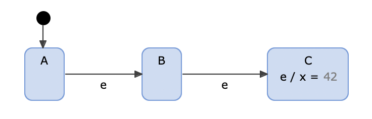
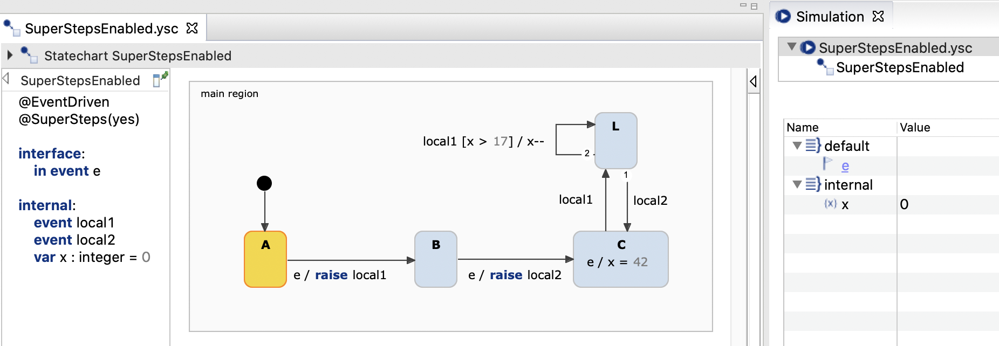
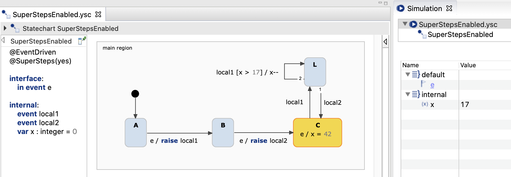

This example demonstrates the usage of superstep semantic and its impact on the state machine execution. For more details, please also refer to our documentation.
The @SuperSteps(yes | no) annotation enables or disables the superstep semantic for a run-to-completion step. In contrast to a regular step, a superstep executes all valid subsequent state transitions. Supersteps are disabled per default.
Take a look at the example model below:

Without the superstep semantic, an incoming event e causes only one state transition, e.g. from state A to state B. However, when superstep semantic is enabled, raising event e causes a state transition from A over B to C. As there is no other outgoing transition from C, the local reaction is also executed, hence x is set to 42.
You can think of the superstep semantic as a loop which performs a regular step until no new state is entered anymore. See the following pseudo-code (a regular step is called microStep here):
do {
stateEntered = false
microStep()
} while (stateEntered)
Please note, the flag stateEntered is set to true inside a microStep whenever a state is entered. During the execution of a superstep all activated events remain active. The choice of superstep semantics has no impact on the semantic variants specified by other annotations like event-driven or cycle-based state machines, event buffering or parent-first / child-first execution order.
Local events can also lead to a multi-step execution of a state machine. The execution of these multiple steps are a result of the iterative processing of the local event buffer. Supersteps are applied to each of these local event processing steps. So event loops are executed on a higher execution level than supersteps. To sum up, let's take a look at a slightly more complicated example:

What happens when state A is active and event e is raised? First, event e invokes a superstep like in the previous example. While taking the state transition to B and C, the local events local1 and local2 are put into the internal event buffer (queue or vector). However, they are not visible until the processing of event e is finished. That means that the local reaction in state C is executed because no outgoing transition can be taken. Hence, x is set to 42. Afterwards, the local events are processed, event by event in the event-driven case or all at once if cycle-based. This again invokes a superstep and state L is entered. As with each self-transition, state L is exited and re-entered again, the superstep loop continues until x equals to 17. Next, internal event local2 is considered and state C is entered. The local reaction in state C is not executed, as event e is no more raised.
